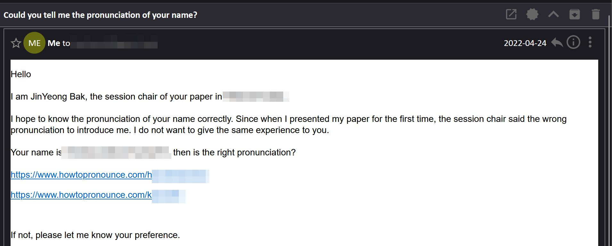

학회에서 논문 발표했을 때 경험 두 가지
1. 제 이름을 부를 때 J를 묵음처리한 session chair
2. 3분 정도 당당하게 늦게 들어와서는
첫 발표자였던 저에게 이번 세션에 발표자가 많으니
기존 스케쥴대로 시간 맞춰 발표하라던 session chair
그러한 경험 때문에 제가 session chair를 맡으면
1. 발표자에게 메일을 보내 이름을 어떻게 불러야하는지 묻습니다
2. 발표장에 미리 도착해서 일찍 온 발표자와 잡담합니다